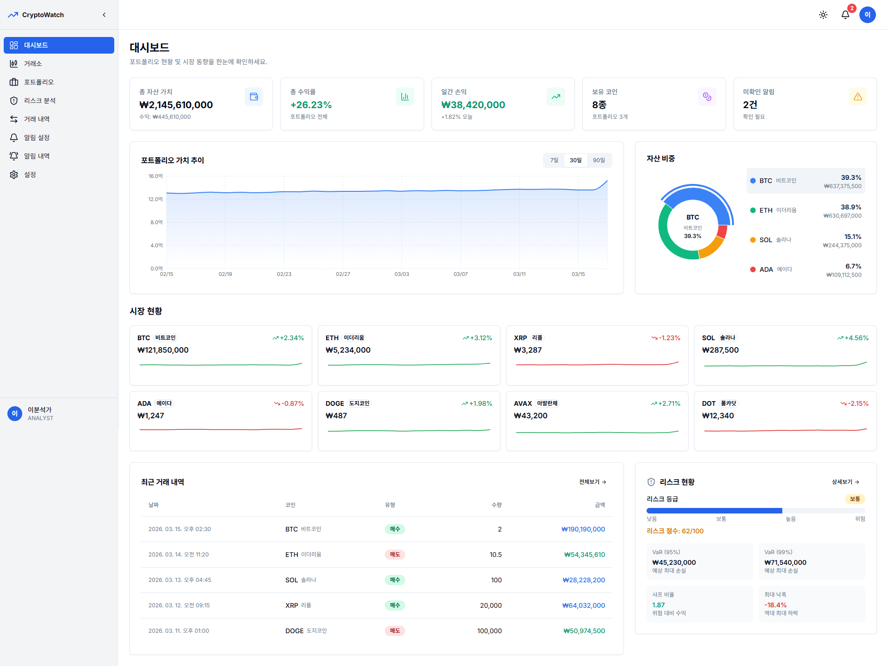
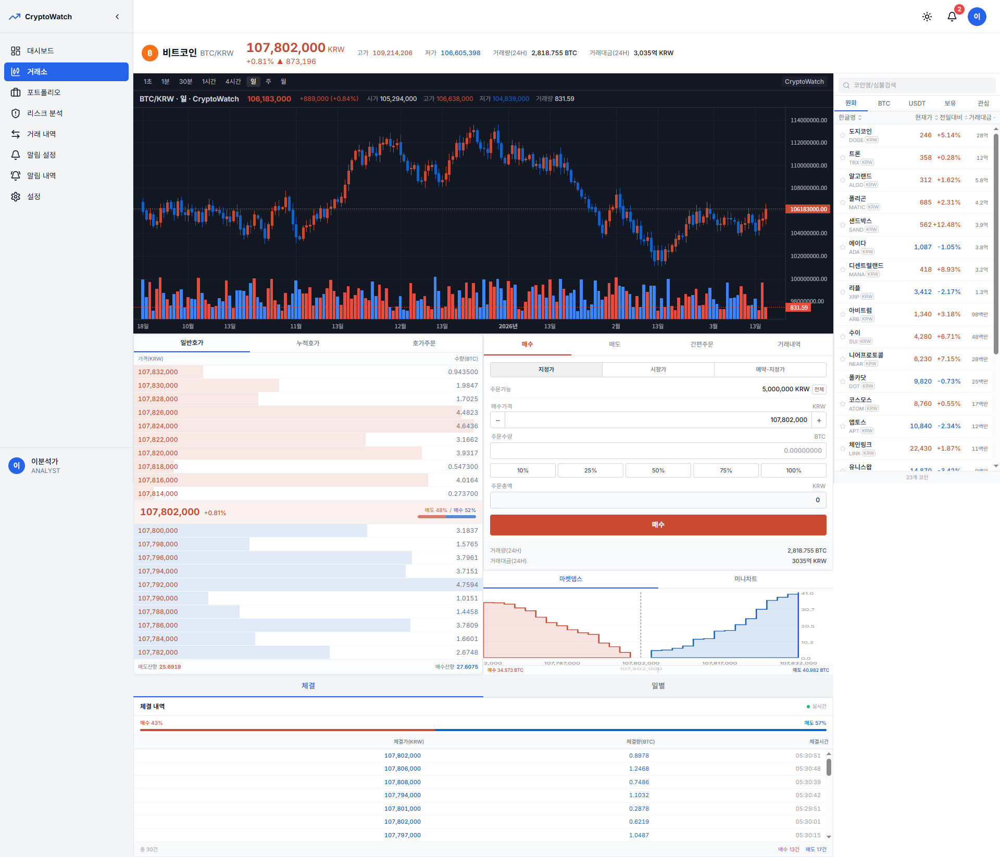
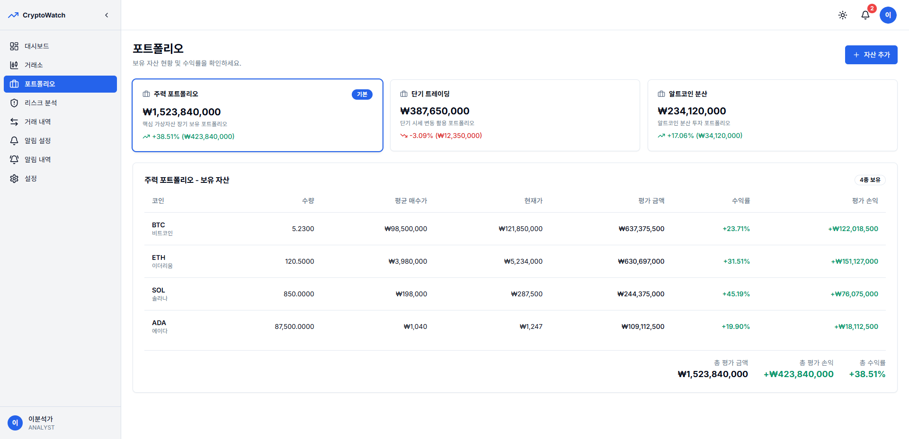
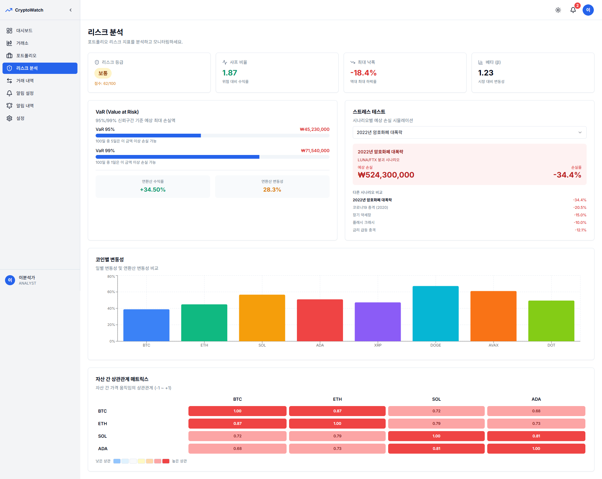
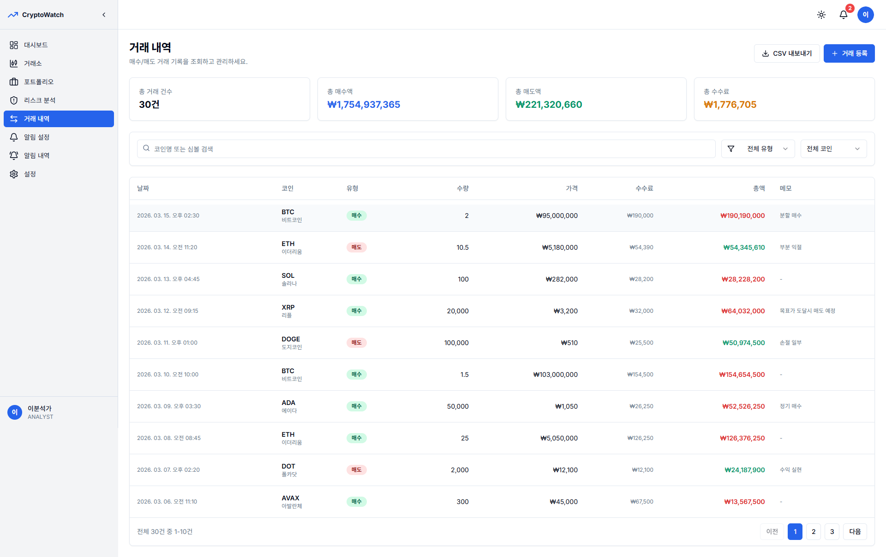
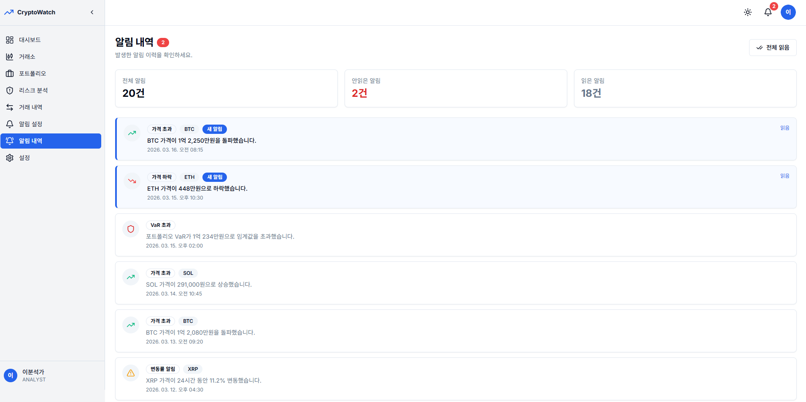

암호화폐 포트폴리오 종합 분석 및 리스크 모니터링 시스템
암호화폐 포트폴리오의 자산 현황, 거래, 리스크를 종합적으로 분석하고 모니터링할 수 있는 웹 기반 대시보드 시스템입니다. 실시간 시세 연동, 캔들스틱 차트, VaR 리스크 분석, 스트레스 테스트 등 전문적인 투자 분석 기능을 제공합니다.
배포 사이트 보기 ↗주요 코인(BTC, ETH, SOL, ADA, XRP, DOGE, AVAX, DOT) 시세를 실시간으로 수집하고, 등락률과 거래량 변화를 대시보드에 반영.
보유 자산을 주력/단기/분산 포트폴리오로 분류하고, 코인별 평균 매수가 대비 현재가 기준 수익률과 평가 손익을 산출.
VaR(95%/99%), 샤프 비율, 최대 낙폭, 베타 등 핵심 지표를 산출하고, 리스크 등급을 100점 기준으로 점수화.
2022년 암호화폐 대폭락, 코로나19 등 과거 위기 시나리오를 기반으로 포트폴리오 예상 손실을 시뮬레이션.
자산 간 상관계수 히트맵과 코인별 변동성 비교 차트를 통해 포트폴리오 분산 효과를 시각적으로 검증.
포트폴리오 가치 추이, 자산 배분 도넛 차트, 시장 현황, 최근 거래를 단일 화면에서 한눈에 파악.
BTC/KRW 등 코인별 캔들스틱 차트, 호가창, 거래량 차트를 제공하여 매매 의사결정 지원.
주력/단기 트레이딩/알트코인 분산으로 포트폴리오를 분류해 전략별 성과를 독립적으로 추적.
95%/99% 신뢰구간 기준 예상 최대 손실액을 산출하고 리스크 등급을 점수화하여 위험도 모니터링.
과거 위기 시나리오 기반 손실 시뮬레이션으로 극단적 상황에서의 포트폴리오 내성을 사전 검증.
자산 간 가격 움직임의 상관계수를 히트맵으로 시각화하여 분산 투자 효과를 정량적으로 검증.
포트폴리오 평가금액, 수익률, 자산 배분, 시장 현황, 최근 거래를 한눈에 확인

실시간 캔들스틱 차트, 호가창, 주문 인터페이스, 거래량 및 체결 내역 조회

주력/단기/분산 포트폴리오 분류, 코인별 수량·매수가·현재가·수익률·평가손익 표시

VaR, 샤프비율, 스트레스 테스트, 코인별 변동성, 자산 간 상관관계 매트릭스

매수/매도 기록 조회, 총 거래액·수수료 요약, 필터링 및 CSV 내보내기

가격 급등/급락, VaR 초과, 거래량 급증 등 실시간 알림 모니터링 및 이력 관리
